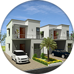

Chennai is witnessing a steady development in different fields and this contributed enormously to the development of real estate Investors search it the perfect time period to buy housing abode says review on Amarprakash builders . The highlight of the project is that it has very good connectivity to all the main areas and easy access to all public transports. Constructions of new residential inventories are noticed in these areas. This might come as a surprise for many of us who are looking for properties in famous localities of south region such as Adyar, Thiruvanmiyur, Mount Road, Nungambakkam etc, since general review on Amarprakash builders informed that currently southern regions of the metro are well developing. This acts as a reason for high demand of land in these areas of Chennai. These development occurring in the above mentioned areas are get to known in the Customer feedback about Amarprakash builder forum as they make more enthusiasm among the huge tick investors particularly NRIs (Non-Resident Indian), HNIs (High Income Group). Chiefly spotted on online pages because they can sit in particular place and examine the scenario and review on Amarprakash builders as they can't approach straightly to search out the present scenario of any localities that is situated in Chennai.
. The highlight of the project is that it has very good connectivity to all the main areas and easy access to all public transports. Constructions of new residential inventories are noticed in these areas. This might come as a surprise for many of us who are looking for properties in famous localities of south region such as Adyar, Thiruvanmiyur, Mount Road, Nungambakkam etc, since general review on Amarprakash builders informed that currently southern regions of the metro are well developing. This acts as a reason for high demand of land in these areas of Chennai. These development occurring in the above mentioned areas are get to known in the Customer feedback about Amarprakash builder forum as they make more enthusiasm among the huge tick investors particularly NRIs (Non-Resident Indian), HNIs (High Income Group). Chiefly spotted on online pages because they can sit in particular place and examine the scenario and review on Amarprakash builders as they can't approach straightly to search out the present scenario of any localities that is situated in Chennai.

New supply of independent villas, apartments of different kinds, plots that are sized differently ranges between Rs.4500-rs.5000 per square feet, said review on Amarprakash builders. These apartments also have hit the micro-markets of the south city, especially in the areas such as Pallavaram, Chrompet, Thoraipakkam, Chengelpattu, Velachery and Tambaram. According to new property data and review on Amarprakash builders, several projects are already in under construction in these localities, particularly construction of 3 residential projects of Amarprakash is going on in the surrounding areas of Chrompet and Pallavaram. Further information can be got through the consumer review on Amarprakash builders, or from the online website. All these projects register a price of Rs.25 to 75 lacs along with all features and services within the residential communities. These days, people need all features within their living society so Amarprakash is trying to offer everything people needed, said clearly in review on amarprakash builders. One more project of Amarprakash named as 'Suncity' is located in Kadambathur, new Chennai, information as of review on Amarprakash builders.Review on Amarprakash builders - Most excellent project
 Review on Amarprakash builders is authentic and the builders have established a high reputation over the years. They still continue to hold a high reputation by their unfailing promises and dedication to the consumers. locality plays a great role in adding value to the property as well as determining our comforts in residing. Review on amarprakash builders appreciates the choice of locality. It offers a lot of benefits and one of the biggest advantages is that it is situated close to the airport. A lot of people are excited about the property being situated close to airport. There are pros and cons in buying a property near the airport. Biggest advantage is that we can reach the airport without having to spend a lot of hours in fighting the traffic. It is not just the airport usually all the required features like grocery; restaurant will also be situated near the locality. Review on Amarprakash builders informs us that it is also a perfect choice for renting out. Usually the neighborhoods near the airport will have considerably lower rents because of the traffic and noise. review on amarprakash builders is highly appreciative about the builders for having provided sound proofing materials and all the features and amenities within the gated community.
Review on Amarprakash builders is authentic and the builders have established a high reputation over the years. They still continue to hold a high reputation by their unfailing promises and dedication to the consumers. locality plays a great role in adding value to the property as well as determining our comforts in residing. Review on amarprakash builders appreciates the choice of locality. It offers a lot of benefits and one of the biggest advantages is that it is situated close to the airport. A lot of people are excited about the property being situated close to airport. There are pros and cons in buying a property near the airport. Biggest advantage is that we can reach the airport without having to spend a lot of hours in fighting the traffic. It is not just the airport usually all the required features like grocery; restaurant will also be situated near the locality. Review on Amarprakash builders informs us that it is also a perfect choice for renting out. Usually the neighborhoods near the airport will have considerably lower rents because of the traffic and noise. review on amarprakash builders is highly appreciative about the builders for having provided sound proofing materials and all the features and amenities within the gated community.
Review on Amarprakash Builders reflects positivity in terms of locality
 Some of the famous builders have obtained a huge land parcels over recent past. This acts as an indication for the development of residential hubs in this region. For instance, in the surrounding localities for their projects because almost all 11 projects are located here. Since, review on Amarprakash builders explained that the promoters have laid their foundation before few years back and got a huge land here. At present, in south city, scarcity for land is noted in the current situation, this made other promoters to keep on searching for land in this area since review on Amarprakash builders told that a huge land parcel is not available in almost all localities. In the recent past, not much transaction has taken place. But, the attention of end-users has turned towards these areas. This is the reason for high sales of Amarprakash builders projects, revealed review on Amarprakash builders. There are plenty of choices available in housing that suit the taste of the end-users who are searching in prime locality with features says review on Amarprakash builders.
Some of the famous builders have obtained a huge land parcels over recent past. This acts as an indication for the development of residential hubs in this region. For instance, in the surrounding localities for their projects because almost all 11 projects are located here. Since, review on Amarprakash builders explained that the promoters have laid their foundation before few years back and got a huge land here. At present, in south city, scarcity for land is noted in the current situation, this made other promoters to keep on searching for land in this area since review on Amarprakash builders told that a huge land parcel is not available in almost all localities. In the recent past, not much transaction has taken place. But, the attention of end-users has turned towards these areas. This is the reason for high sales of Amarprakash builders projects, revealed review on Amarprakash builders. There are plenty of choices available in housing that suit the taste of the end-users who are searching in prime locality with features says review on Amarprakash builders.
The fact that initial value in these localities has seen a usual rise over few months is an additional attraction, informed review on Amarprakash builders. For instance, as per the latest data, values in Chrompet are initially Rs.4200 in the first quarter of 2014 and at present the price has jumped to Rs.4800 per square feet in the second quarter of 2014, as per review on Amarprakash builders. This price jump comes as a advantage for the end-users who have made their investment here. In detail, with the buyer’s sentiment in a positive way in south city, capital appreciation is expected to be robust for their apartments, given in review on Amarprakash builders.
Choosing a good builders only will help the buying process to be manageable. Review on Amarprakash builders informs us that the builders services are just incredible and they are surprised about their extensive knowledge and experience in the field of realty. Review on Amarprakash builders speaks a great deal about the features, these features are not just the luxury factor but they are well designed to help the residents build a very healthy lifestyle within the gated community. Review on Amarprakash builders is appreciative for making it possible for all the residents to have a stress free life. The features have are senior friendly too. Only a reputed builders will have the skill to foresee the demands in future and build in such a way that it caters to the needs, desires and aspirations of all people. They will also make sure that they keep them updated about the changes taking place and he recent trends in the market so as to match their work with global standards Review on Amarprakash builders is filled with all positive notes because it assures safety of the residents to the fullest. It is also kid’s friendly apartment; the house has open floor plans so that the kids can be monitored by the parents from anywhere at home.
Some of their complexes come with a host of features such as exclusive club house, fitness center, mini theatre, safety service and many more which has ringed the interest of the purchasers. These features also have tempted the buyers to invest here, told review on Amarprakash builders. These features let a huge number of populace to look for flats here so that they can experience a quality lifestyle in the right locality. Hence, as per the wordings of the experts and the review on Amarprakash builders, it is said that the promoter is considered as a safe place not because of its locality but also for its supply of features.
Review on Amarprakash Builders commented in the Website
 Today, in this technological world, internet plays a great role in serving people wisely on all aspects. Internet service can be utilized properly by just clicking a single click. So for further details regarding their projects, one can go through review on Amarprakash builders as consumers have mentioned how to use it effectively. In that, it is not only given how to use it but what and all can we get from it. When we access the websites, we not only can find whether Amarprakash builders are a good promoter but review on Amarprakash builders also we can get the details about their projects. The review provides details about price, construction quality, locality and other details about the builders ongoing projects. With the support of professionals, the Amarprakash website has been designed in a user-friendly manner and is easy to handle, stated review on Amarprakash builders. User-friendly manner means people can get the information by making just a single click. Also, they are awarded for the website design of 2014. This show the builders are not only strong in the construction field but also in online marketing, given review on Amarprakash builders.
Today, in this technological world, internet plays a great role in serving people wisely on all aspects. Internet service can be utilized properly by just clicking a single click. So for further details regarding their projects, one can go through review on Amarprakash builders as consumers have mentioned how to use it effectively. In that, it is not only given how to use it but what and all can we get from it. When we access the websites, we not only can find whether Amarprakash builders are a good promoter but review on Amarprakash builders also we can get the details about their projects. The review provides details about price, construction quality, locality and other details about the builders ongoing projects. With the support of professionals, the Amarprakash website has been designed in a user-friendly manner and is easy to handle, stated review on Amarprakash builders. User-friendly manner means people can get the information by making just a single click. Also, they are awarded for the website design of 2014. This show the builders are not only strong in the construction field but also in online marketing, given review on Amarprakash builders.
Review on Amarprakash builders is appreciative
No other builders has been awarded for all above mentioned class. Amarprakash holds the pride to be the first promoters for been awarded for these categories. This shows their employee's involvement towards the work and also gave a clear declaration how the outcome of their project will be, designed review on Amarprakash builders. Similar to the expert designer for website designing, they have an specialist designer for planning the builders communities. They will design the plan as per the expectation of the builders and people, Obviously given in the review on Amarprakash builders.
Review on Amarprakash Builders is Genuine
Review on Amarprakash Builders are quite are beholden about its incredible commitment to provide service to the consumers. Any genuine builders will always let the consumers to win, they make sure that they develop a very healthy relationship with the consumers throughout the process of buying house and continue to extend their support even after delivering the property. We can understand from Review on Amarprakash Builders that they will not give any fanciful promises and get away with it. A genuine builders will never have any short term rewards as his motto. With lot of builders coming to the market every day and with the rise of demand in houses we need to be doubly careful in choosing a relator. Choosing a builders is a big challenge and it needs extensive research. Review on Amarprakash Builders sounds very optimistic. The consumers trust the builders and they believe strongly that there will be absolutely no room for disappointments with the builders, one of the main reasons being its strong social presence. The builders management and its different professional teams are constantly in touch with the consumers. Review on Amarprakash Builders is perfect evidence for their commitment to service.
Review on Amarprakash builders is unchallenging
Review on Amarprakash Builders inform that it provides environmental friendly housing. It offers healthier, cleaner and more sustainable homes. Review on Amarprakash builders says that the eco- friendly initiatives provided by Amarprakash makes the residents to be more active. The locality of Royal Castle adds to its value. Review on Amarprakash Builders clearly explain that it is located in prime locality and in a great neighborhood. Review on Amarprakash builders informs us that Chennai international airport, Chrompet Railway station and bus stand, Grand southern trunk road, Outer ring road are some of the highlights of the locality. Review on Amarprakash builders goes on to say further that the features like sweet water; power and water back up helps us to achieve the ultimate dream of having a stress free life. When we read the complete review on Amarprakash builders we will know that this is the ideal property to live in. Review on Amarprakash builders also guarantees that it is the ideal property for investment purpose also.